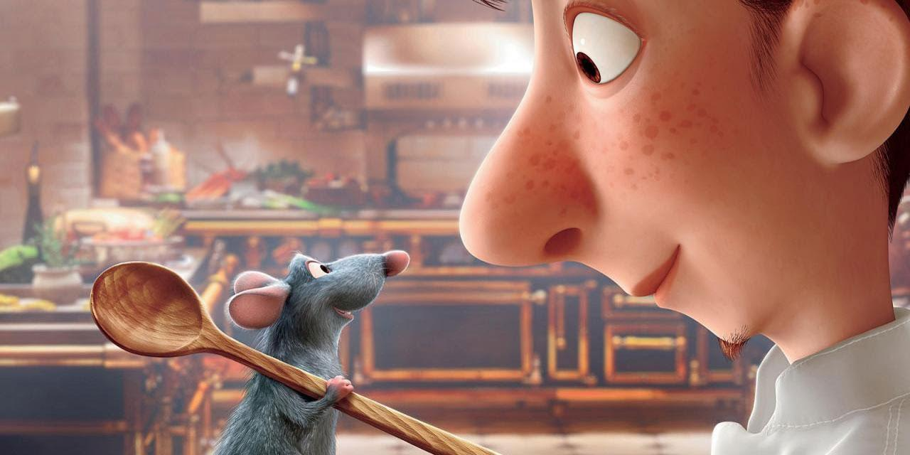

About Remy
Remy is a rat and a chef. He cooks for many people at his restaurant and has served the world's harshest restaurant critic, Anton Ego. The dish, Ratatouille, prepared by Chef Remy received high praise and a deep respect from Mr. Ego for the chef's talents, proving that "a great artist can come from anywhere."
Remy and Alfredo
Characteristics
- He's talented.
- He takes care of his family.
- He's got big dreams.
Remy's Best Friend
Remy's best friend is Alfredo a.k.a Linguini, who took him in and believed in him. He has other friends and inspirations. Click the links below to read more about them: